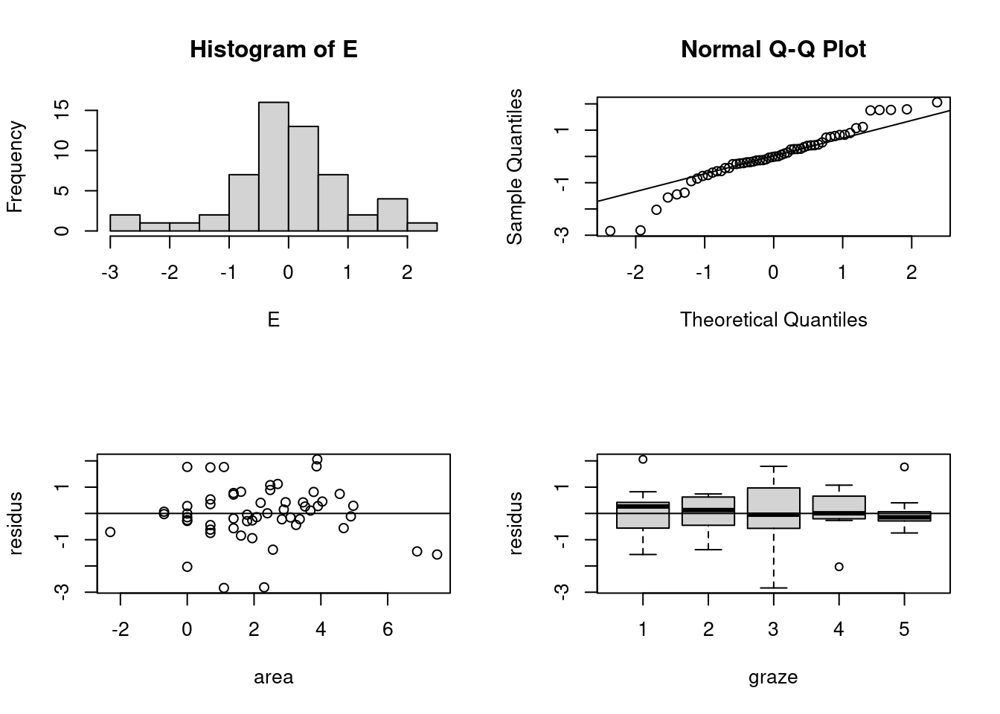
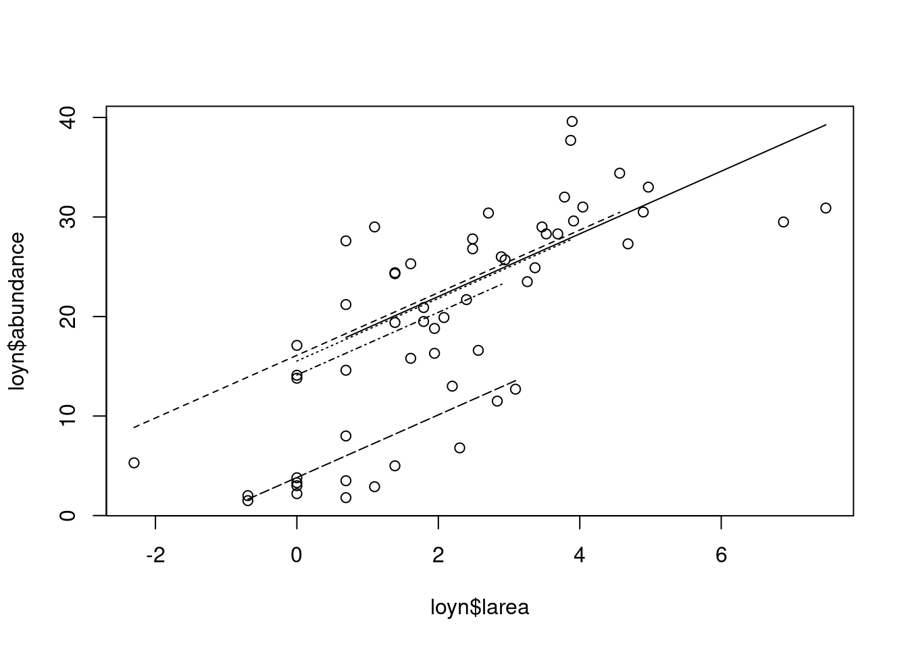

loyn <- read.table("Loyn.txt", header=T)
loyn$larea <- log(loyn$area)
loyn$ldist <- log(loyn$distance)
loyn$lldist <- log(loyn$ldistance)
loyn$fgraze <- factor(loyn$graze)
model1 <- lm(abundance ~ larea + ldist + lldist + year + altitude + fgraze, data = loyn)4 Regression linéaire
4.1 Introduction
Au chapitre précédent, nous avons utilisé divers outils graphiques (diagrammes en points de Cleveland, boîte à moustache, histogrammes) pour explorer la forme de nos données (normalité), rechercher la présence de valeurs aberrantes et évaluer la nécessité de transformer les données.
Nous avons également abordé des méthodes plus complexes (coplot, scatterplot, pairplots) qui ont permis de voir les relations entre une seule variable de réponse et plus d’une variable explicative. Il s’agit de la première étape essentielle de toute analyse qui permet de se faire une idée sur les données avant de passer à des outils statistiques formels tels que la régression linéaire.
Tous les jeux de données ne se prêtent pas à la régression linéaire. Pour les données de comptage ou de présences-absences, la modélisation linéaire généralisée (GLM) est plus appropriée. Et lorsque les modèles paramétriques utilisés par la régression linéaire et la GLM donnent de mauvais résultats, les techniques non paramétriques telles que la modélisation additive et la modélisation additive généralisée (GAM) sont susceptibles de donner de meilleurs résultats.
Les techniques telles que le GLM et le GAM sont plus difficiles à comprendre et à mettre en œuvre. C’est pourquoi nous commencerons donc par résumer brièvement les principes sous-jacents de la modélisation linéaire.
4.2 Présentation de l’analyse
Avant de taper avec enthousiasme le code R pour la régression linéaire et de l’exécuter, nous devrions d’abord réfléchir à ce que nous voulons faire. Le but de l’analyse est de trouver une relation entre les densités d’oiseaux (abundance) et les six variables explicatives. Mais il se pourrait bien que les oiseaux perçoivent l’effet area différemment selon que les valeurs de graze sont faibles ou élevées. Si c’est le cas, nous devons inclure un terme d’interaction entre graze et larea. Le problème est qu’il existe un grand nombre d’interactions bidirectionnelles potentielles. Les oiseaux peuvent réagir différemment à area si les valeurs de graze sont faibles en combinaison avec de faibles valeurs d’altitude (altitude). Plus l’ensemble de données est petit (56 observations, c’est petit), plus il est difficile d’inclure de multiples interactions.
Il peut arriver que vous ne disposiez pas d’un nombre suffisant d’observations par combinaison. Dans ce cas, les observations individuelles peuvent devenir particulièrement influentes. De nombreux groupes de discussion statistiques ont de longs fils de discussion sur le sujet de l’interaction, voici les points que je vous recommande:
- Commencer par un modèle sans interactions. Appliquer le modèle, la sélection du modèle et la validation du modèle. Si la validation montre qu’il existe des motifs dans les résidus, cherchez-en la raison. L’ajout d’interactions peut être une option pour améliorer le modèle.
- Utiliser les connaissances biologiques pour décider quelles sont les interactions qu’il est judicieux d’ajouter, le cas échéant.
- Appliquer une bonne exploration des données pour voir quelles interactions peuvent être importantes.
4.3 Modélisation
Nous débutons l’analyse avec un modèle sans interactions.
La question qui se pose maintenant est la suivante : Devons-nous examiner d’abord la sortie numérique ou la sortie graphique ? Il est inutile d’appliquer une validation détaillée du modèle si rien n’est significatif. D’un autre côté, pourquoi examiner les résultats numériques si toutes les hypothèses ne sont pas respectées ? Il est peut-être préférable de commencer par les résultats numériques, car cela prend moins de temps et c’est plus facile. Il existe plusieurs façons d’obtenir le résultat numérique de notre modèle de régression linéaire.
4.3.1 Visualisation des résultats
4.3.1.1 Évaluation de la signification des paramètres de régression
Un aspect important de la régression linéaire est la répartition de la variabilité totale. La variance totale de \(Y\), désignée par \(SS_{total}\), peut être divisée en deux parties: la partie expliquée par \(X\) (\(SS_{régression}\)) et la partie non expliquée par \(X\) (\(SS_{résidual}\)). \(SS_{regression}\) mesure à quel point la partie régression (\(X\)) explique \(Y\), et \(SS_{residual}\) montre la quantité de variabilité dans les valeurs \(Y\) qui ne peut être expliquée par le modèle de régression. La plupart des programmes statistiques produisent des tableaux ANOVA de la forme suivante.
| Source de variation | Somme des carrés | Degré de liberté | Somme des carrés moyens | Somme des carrés moyens attendu |
|---|---|---|---|---|
| Regression | \[ \sum^n_{i=1}(\hat Y_i - \bar Y)^2 \] | \[ 1 \] | \[ \sum^n_{i=1}\frac{(\hat Y_i - \bar Y)^2}{1} \] | \[ \sigma^2_\epsilon + \beta^2\sum^n_{i=1}(\hat X_i - \bar X)^2 \] |
| Residus | \[ \sum^n_{i=1}(Y_i - \hat Y_i)^2 \] | \[ n-2 \] | \[ \sum^n_{i=1}\frac{(Y_i - \hat Y_i)^2}{n-2} \] | \[ \sigma^2_\epsilon \] |
| Total | \[ \sum^n_{i=1}(Y_i - \bar Y)^2 \] | \[ n-1 \] | ||
La somme des carrés dépend de la taille de l’échantillon \(n\). Si l’on utilise davantage d’observations, les sommes des carrés sont plus importantes. Par conséquent, les sommes des carrés sont transformées en composantes de variance en les divisant par les degrés de liberté. Les degrés de liberté pour la somme des carrés de régression sont le nombre de paramètres de régression moins 1. Les degrés de liberté pour la somme totale des carrés est \(n - 1\). S’il n’y avait pas de variables explicatives, la variance serait estimée à partir du rapport entre la somme totale des carrés et \(n - 1\).
Les degrés de liberté pour la somme des carrés résiduels est \(n - 2\); deux paramètres de régression ont été estimés pour calculer cette composante: l’ordonnée à l’origine et la pente. Le rapport des deux composantes de la variance est appelé carré moyen (MS). Les MS sont des variances d’échantillon et, par conséquent, des paramètres d’estimation. \(MS_{residual}\) estime \(\sigma^2_\epsilon\) et \(MS_{regression}\) estime \(\sigma^2_\epsilon\) plus un terme supplémentaire dépendant de \(\beta\) et \(X\).
Dans la régression bivariée, le tableau ANOVA est utilisé pour tester l’hypothèse nulle selon laquelle la pente de la ligne de régression est égale à zéro (\(H_0\): \(\beta\) = 0). Sous cette hypothèse nulle, le MS attendu pour la composante de régression est égal à un. Ainsi, le rapport des deux composantes de variance \(MS_{regression}\) et \(MS_{residual}\) est également égal à 1. Si, pour les données de notre échantillon, le rapport est supérieur à un, il y a des raisons de penser que l’hypothèse nulle est fausse. Si les quatre hypothèses de régression se vérifient, le rapport de \(MS_{regression}\) et \(MS_{residual}\) suivra une distribution \(F\) avec \(ddl_{regression}\) et \(ddl_{residual}\) degrés de liberté.
Le tableau ANOVA permet donc de vérifier s’il existe une relation linéaire entre \(Y\) et \(X\).
4.3.1.2 Commande summary
La commande summary donne le résultat suivant:
summary(model1)
Call:
lm(formula = abundance ~ larea + ldist + lldist + year + altitude +
fgraze, data = loyn)
Residuals:
Min 1Q Median 3Q Max
-15.8992 -2.7245 -0.2772 2.7052 11.2811
Coefficients:
Estimate Std. Error t value Pr(>|t|)
(Intercept) 36.68025 115.16348 0.319 0.7515
larea 2.96755 0.65287 4.545 3.97e-05 ***
ldist 0.14456 1.19334 0.121 0.9041
lldist 0.34641 0.92835 0.373 0.7107
year -0.01277 0.05803 -0.220 0.8267
altitude 0.01070 0.02390 0.448 0.6565
fgraze2 0.52851 3.25221 0.163 0.8716
fgraze3 0.06601 2.95871 0.022 0.9823
fgraze4 -1.24877 3.19838 -0.390 0.6980
fgraze5 -12.47309 4.77827 -2.610 0.0122 *
---
Signif. codes: 0 '***' 0.001 '**' 0.01 '*' 0.05 '.' 0.1 ' ' 1
Residual standard error: 6.105 on 46 degrees of freedom
Multiple R-squared: 0.7295, Adjusted R-squared: 0.6766
F-statistic: 13.78 on 9 and 46 DF, p-value: 2.115e-10La première partie de la sortie indique le modèle appliqué et quelques informations de base sur les résidus.
La partie située sous «Coefficients» donne les paramètres de régression estimés, les erreurs standard, les \(t\)-values et les \(p\)-values. La seule partie déroutante de ce résultat est peut-être l’absence de graze niveau 1. Il est utilisé comme base de référence. Ainsi, une parcelle ayant le niveau 2 de graze a 0,52 oiseaux (densité) de plus qu’une parcelle ayant le niveau 1, et une parcelle ayant le niveau 5 de graze a 12,4 oiseaux de moins qu’une parcelle ayant le niveau 1. Les \(p\)-values correspondantes indiquent si une parcelle est significativement différente du niveau 1. Notez que vous ne devez pas évaluer l’importance d’un facteur en fonction des \(p\)-values individuelles. Nous proposerons une meilleure méthode à cet effet dans un instant. Vous ne devez pas laisser de côté les niveaux individuels d’une variable nominale. Ils sont tous pris en compte ou vous laissez tomber la variable entière. La dernière partie du code donne le \(R^2\) et le \(R^2\) ajusté (pour la sélection du modèle). Le reste de la sortie devrait, je l’espère, vous être familier.
4.3.1.3 Commande drop1
La fonction drop1 fais exactement ce que son nom indique, elle élimine une variable, chacune à son tour et reévalue le modèle:
drop1(model1, test="F")Single term deletions
Model:
abundance ~ larea + ldist + lldist + year + altitude + fgraze
Df Sum of Sq RSS AIC F value Pr(>F)
<none> 1714.4 211.60
larea 1 770.01 2484.4 230.38 20.6603 3.97e-05 ***
ldist 1 0.55 1715.0 209.62 0.0147 0.90411
lldist 1 5.19 1719.6 209.77 0.1392 0.71075
year 1 1.81 1716.2 209.66 0.0485 0.82675
altitude 1 7.47 1721.9 209.85 0.2004 0.65650
fgraze 4 413.50 2127.9 215.70 2.7736 0.03799 *
---
Signif. codes: 0 '***' 0.001 '**' 0.01 '*' 0.05 '.' 0.1 ' ' 1Le modèle complet a une somme des carrés de 1714,4. Chaque fois, \(un\) terme est supprimé à tour de rôle et la somme des carrés résiduelle est calculée à chaque fois. Celles-ci sont ensuite utilisées pour calculer une statistique \(F\) et une \(p\)-value correspondante. Par exemple, pour obtenir le résultat de la première ligne, R ajuste deux modèles. Le premier modèle contient toutes les variables explicatives et le second modèle toutes, sauf \(larea\). Il utilise ensuite les sommes des carrés résiduels de chaque modèle dans la statistique \(F\) suivante: \[ F=\frac{(SCR_1 - SCR_2)/(p-q)}{SCR_2/(n-p)} \]
Les termes \(SCR_1\) et \(SCR_2\) sont les sommes des carrés résiduels du modèle model1 et du modèle \(model2\) , respectivement, et \(n\) est le nombre d’observations. Le nombre de paramètres dans les modèles 2 et 1 est respectivement \(p\) et \(q (p > q)\). Les modèles sont imbriqués dans le sens où un modèle est obtenu à partir d’un autre en fixant certains paramètres à 0. L’hypothèse nulle sous-jacente à cette statistique est que les paramètres omis sont égaux à 0 : \(H_0: \beta = 0\). Plus la valeur de la statistique \(F\) est élevée, plus il y a de preuves pour rejeter cette hypothèse. En fait, la statistique \(F\) suit une distribution \(F\), en supposant l’homogénéité, la normalité, l’indépendance et l’absence de modèles résiduels. Dans ce cas, nous pouvons rejeter l’hypothèse nulle.
Dans la régression linéaire, les \(p\)-values de la fonction drop1 sont les mêmes que celles obtenues par la statistique \(t\) de la commande summary, mais pour les GLM non gaussiens, ce n’est pas nécessairement le cas. L’hypothèse nulle sous-jacente à la statistique \(F\) est que le paramètre de régression du terme qui a été abandonné est égal à 0. Fondamentalement, nous comparons un modèle complet et (à plusieurs reprises) un modèle imbriqué.
Si le modèle comporte plusieurs variables nominales, la fonction drop1 donne une \(p\)-value pour chaque variable, ce qui est pratique.
4.3.1.4 Commande anova
La commande anova donne le résultat suivant.
anova(model1)Analysis of Variance Table
Response: abundance
Df Sum Sq Mean Sq F value Pr(>F)
larea 1 3471.0 3471.0 93.1303 1.247e-12 ***
ldist 1 65.5 65.5 1.7568 0.191565
lldist 1 136.5 136.5 3.6630 0.061868 .
year 1 458.8 458.8 12.3109 0.001019 **
altitude 1 78.2 78.2 2.0979 0.154281
fgraze 4 413.5 103.4 2.7736 0.037992 *
Residuals 46 1714.4 37.3
---
Signif. codes: 0 '***' 0.001 '**' 0.01 '*' 0.05 '.' 0.1 ' ' 1R utilise le carré moyen du modèle complet (37,3) et le carré moyen de chaque ligne dans un test \(F\) similaire au précédent. Ainsi, 93,13 est obtenu en divisant 3471,0 par 37,3, et 1,75 est égal à 65,5/37,3. Les carrés moyens sont calculés à partir de la somme des carrés divisée par les degrés de liberté. La somme des carrés sur la première ligne, 3471,0, est la somme des carrés de régression du modèle \(abundance_i = \alpha + \beta \times larea + \epsilon_i\). Les 65,5 de la deuxième ligne représentent la diminution de la somme des carrés résiduels si \(ldist\) est ajouté à ce modèle (pour le voir, ajustez un modèle avec seulement l’ordonnée à l’origine et \(larea\), et un modèle avec l’ordonnée à l’origine, \(larea\), et \(ldist\) et comparez les deux sommes des carrés résiduels obtenus à partir des commandes anova ; la différence sera de 65,5). L’avantage de cette approche est que la dernière ligne nous donne une \(p\)-value pour la variable nominale graze (puisqu’il s’agit de la dernière variable ajoutée), et nous en avons besoin pour déterminer si graze est significatif. L’inconvénient de cette méthode de test est que les \(p\)-value dépendent de l’ordre des variables: Changez l’ordre et vous obtiendrez une conclusion différente. Notez que la dernière ligne de la commande anova et la ligne drop1 sont identiques. Cela s’explique par le fait que les mêmes modèles imbriqués sont comparés. La fonction anova peut également être utilisée pour comparer des modèles imbriqués. Supposons que nous ajustions un modèle linéaire avec toutes les variables explicatives, et un modèle avec toutes les variables explicatives, à l’exception de graze. Ces modèles sont imbriqués car le second modèle est un cas particulier du premier, en supposant que les quatre paramètres de régression pour les niveaux de graze sont égaux à zéro (voir ci-dessous).
model2 <- lm(abundance ~ larea + ldist + lldist + year + altitude, data = loyn)
anova(model1, model2)Analysis of Variance Table
Model 1: abundance ~ larea + ldist + lldist + year + altitude + fgraze
Model 2: abundance ~ larea + ldist + lldist + year + altitude
Res.Df RSS Df Sum of Sq F Pr(>F)
1 46 1714.4
2 50 2127.9 -4 -413.5 2.7736 0.03799 *
---
Signif. codes: 0 '***' 0.001 '**' 0.01 '*' 0.05 '.' 0.1 ' ' 1L’hypothèse nulle sous-jacente à la statistique \(F\) est que les quatre paramètres de régression pour \(graze\) (niveaux 2-5) sont égaux à 0, ce qui est rejeté à 5%. Notez que la \(p\)-value est identique à la \(p\)-value obtenue pour le même test avec la commande anova(M1). Alors pourquoi faire la comparaison ? L’avantage de la commande anova(M1, M2) est que nous pouvons contrôler quels termes sont éliminés. Ceci est particulièrement utile dans le cas d’interactions multiples.
4.3.2 Sélection de modèle
Toutes les variables explicatives ne sont pas significativement différentes de 0, comme le montrent les \(p\)-values des statistiques \(t\) (commande summary) ou les \(p\)-value de la statistique \(F\) (commande drop1) présentées ci-dessus. Si l’objectif de l’analyse est de comprendre quelles variables explicatives déterminent l’abondance des oiseaux, nous pourrions alors décider d’abandonner les variables explicatives qui ne sont pas significatives. Il s’agit là encore d’un sujet sur lequel les statisticiens ne sont pas d’accord. Il existe essentiellement trois approches principales :
- Abandonner les variables explicatives une à une sur la base de procédures de test d’hypothèses.
- Abandonner les variables explicatives une à une (et à chaque fois refaire le modèle) et utiliser un critère de sélection de modèle comme l’AIC ou le BIC pour décider du modèle optimal.
- Spécifier les modèles choisis a priori et comparer ces modèles entre eux.
La première approche consiste à éliminer le terme le moins significatif, soit sur la base des valeurs \(t\) et \(p\)-values obtenues par la commande summary, soit par la commande anova pour comparer les modèles imbriqués s’il y a des variables nominales et/ou des interactions. Dans la deuxième approche, nous utilisons un critère de sélection comme le critère d’information d’Akaike (AIC). Il mesure la qualité de l’ajustement et la complexité du modèle. L’avantage de l’AIC est que R dispose d’outils permettant d’appliquer une sélection automatique vers l’avant (forward selection) ou vers l’arrière (backward selection) sur la base de l’AIC, ce qui facilite la vie! L’inconvénient est que l’AIC peut être conservateur et qu’il peut être nécessaire de procéder à un réglage fin (en utilisant les résultats des tests d’hypothèse de la première approche) une fois que l’AIC a sélectionné un modèle optimal. Une sélection en arrière est appliquée par la commande step(model1), et sa sortie est donnée comme suit:
step(model1)Start: AIC=211.6
abundance ~ larea + ldist + lldist + year + altitude + fgraze
Df Sum of Sq RSS AIC
- ldist 1 0.55 1715.0 209.62
- year 1 1.81 1716.2 209.66
- lldist 1 5.19 1719.6 209.77
- altitude 1 7.47 1721.9 209.85
<none> 1714.4 211.60
- fgraze 4 413.50 2127.9 215.70
- larea 1 770.01 2484.4 230.38
Step: AIC=209.62
abundance ~ larea + lldist + year + altitude + fgraze
Df Sum of Sq RSS AIC
- year 1 1.73 1716.7 207.68
- altitude 1 7.07 1722.0 207.85
- lldist 1 8.57 1723.5 207.90
<none> 1715.0 209.62
- fgraze 4 413.28 2128.2 213.71
- larea 1 769.64 2484.6 228.38
Step: AIC=207.68
abundance ~ larea + lldist + altitude + fgraze
Df Sum of Sq RSS AIC
- lldist 1 8.32 1725.0 205.95
- altitude 1 9.71 1726.4 205.99
<none> 1716.7 207.68
- fgraze 4 848.77 2565.5 222.18
- larea 1 790.20 2506.9 226.88
Step: AIC=205.95
abundance ~ larea + altitude + fgraze
Df Sum of Sq RSS AIC
- altitude 1 5.37 1730.4 204.12
<none> 1725.0 205.95
- fgraze 4 914.23 2639.3 221.76
- larea 1 1130.78 2855.8 232.18
Step: AIC=204.12
abundance ~ larea + fgraze
Df Sum of Sq RSS AIC
<none> 1730.4 204.12
- fgraze 4 1136.5 2866.9 224.40
- larea 1 1153.8 2884.2 230.73
Call:
lm(formula = abundance ~ larea + fgraze, data = loyn)
Coefficients:
(Intercept) larea fgraze2 fgraze3 fgraze4 fgraze5
15.7164 3.1474 0.3826 -0.1893 -1.5916 -11.8938 La première partie du code montre que le modèle contenant toutes les variables explicatives a un AIC de 211,6 avant l’élimination de chaque terme. Plus l’AIC est faible, meilleur est le modèle. Par conséquent, nous devrions abandonner ldist. La procédure se poursuit en éliminant year, lldist et altitude.
À ce stade, aucun autre terme n’est supprimé; le modèle avec larea et fgraze a un AIC de 204,12, et la suppression de n’importe lequel de ces termes donne un AIC plus élevé. Cela signifie que le modèle optimal basé sur l’AIC contient fgraze et larea. Vous devriez réappliquer ce modèle et voir si les deux termes sont significatifs. Notez que la commande summary et la commande anova sont toutes deux nécessaires pour cela. Les deux termes sont significatifs au niveau de 5%. Vous pouvez également essayer de voir si l’ajout d’une interaction entre larea et fgraze améliore le modèle. Vous devriez pouvoir obtenir une \(p\)-value pour ce terme d’interaction.
4.3.3 Exercice
- Réevaluez le modèle en prenant en compte uniquement
fgrazeetlarea. Introduisez ensuite des interaction dans le modèle.
4.3.4 Validation de modèle
4.3.4.1 Conditions de validité du modèle linéaire
4.3.4.1.1 Normalité
L’hypothèse de normalité signifie que si nous répétons l’échantillonnage plusieurs fois dans les mêmes conditions environnementales, les observations seront normalement distribuées pour chaque valeur de \(X\). Plusieurs auteurs affirment que la violation de la normalité n’est pas un problème grave en raison de la théorême de la limite centrale. Certains auteurs affirment même que l’hypothèse de normalité n’est pas du tout nécessaire si la taille de l’échantillon est suffisamment grande. La normalité à chaque valeur \(X\) doit être vérifiée en réalisant un histogramme de toutes les observations à cette valeur \(X\) particulière. Très souvent, nous ne disposons pas de plusieurs observations (sous-échantillons) pour chaque valeur \(X\). Dans ce cas, le mieux que nous puissions faire est de regrouper tous les résidus et de réaliser un histogramme des résidus regroupés; la normalité des résidus regroupés est rassurante, mais elle n’implique pas la normalité des données de la population.
Nous expliquons également comment ne pas vérifier la normalité, car le concept sous-jacent de normalité est très mal compris par de nombreuses personnes. Le modèle de régression linéaire exige la normalité des données, et donc des résidus pour chaque valeur \(X\). Les résidus représentent l’information qui reste après avoir éliminé l’effet des variables explicatives. Cependant, les données brutes \(Y\) (\(Y\) représente la variable réponse) contiennent les effets des variables explicatives. Pour évaluer la normalité des données \(Y\), il est donc trompeur de fonder son jugement uniquement sur un histogramme de toutes les données \(Y\). La situation est différente si vous disposez d’un grand nombre de réplicats pour chaque valeur \(X\).
En résumé, à moins que vous ne disposiez d’observations répétées pour chaque valeur \(X\), vous ne devez pas fonder votre jugement de normalité des données sur un histogramme des données brutes. Il faudrait plutôt appliquer un modèle et inspecter les résidus.
4.3.4.1.2 Hétérogénéité
Il est possible de s’en sortir avec une petite quantité de non-normalité. Cependant, l’hétérogénéité (violation de l’homogénéité), également appelée hétéroscédasticité, se produit si la dispersion des données n’est pas la même pour chaque valeur \(X\). Ceci peut être vérifié en comparant la dispersion des résidus pour les différentes valeurs \(X\). Comme dans la sous-section précédente, nous pouvons affirmer que la plupart du temps, nous n’avons pas d’observations multiples pour chaque valeur \(X\), du moins pas dans la plupart des études sur le terrain. La seule chose que nous puissions faire est de regrouper tous les résidus et de les comparer aux valeurs ajustées. L’écart devrait être à peu près le même dans toute la gamme des valeurs ajustées.
Il est possible d’utiliser des tests pour vérifier l’homogénéité des données. Cependant la plupart d’entre eux se basent sur la normalité de ces valeurs (par exemple le test de Barlett). Mon avis personnel est de prioriser les outils graphiques de visualisation des résidus. Il est aussi possible d’effectuer une regression linéaire, même en présence d’une faible hétérogénéité cependant cela n’est pas le cas lorsqu’on observe une forte hétérogénéité.
4.3.4.1.3 X fixe
Le \(X\) fixe est une hypothèse impliquant que les variables explicatives sont déterministes. Vous connaissez à l’avance les valeurs de chaque échantillon. C’est par exemple le cas si l’on sélectionne a priori des sites avec une valeur de température prédéfinie ou si l’on choisit la quantité de toxine dans un bassin. Mais si vous allez sur le terrain, que vous prélevez un échantillon au hasard et que vous mesurez ensuite la température ou la concentration de toxines, il s’agit alors d’un processus aléatoire.
La violation grave de cette hypothèse entraîne des paramètres de régression biaisés. L’expression «biaisé» signifie que la valeur attendue du paramètre estimé n’est pas égale à la valeur de la population. Heureusement, nous pouvons ignorer le problème si l’erreur dans la détermination de la variable explicative est faible par rapport à l’étendue de la variable explicative. Ainsi, si vous avez 20 échantillons où la température varie entre 15 et 20 degrés Celsius, et que l’erreur de votre thermomètre est de 0,1, tout va bien. Mais, par exemple, dans le cas de la détermination de l’âge des baleines, celà peut être une autre histoire, car l’âge varie de 0 à 40 ans, mais l’erreur sur la lecture de l’âge peut (ou non) être de quelques années. Il existe des solutions élégantes à ce problème telles que le bootstrapping que nous n’aborderons pas ici.
4.3.4.1.4 Indépendance
La violation de l’indépendance est le problème le plus grave car elle invalide des tests importants tels que le test \(F\) et le test \(t\). La question clé est donc de savoir comment identifier un manque d’indépendance et comment y remédier. Il y a violation de l’indépendance si la valeur \(Y\) à \(X_i\) est influencée par d’autres \(X_i\) (Quinn et Keough, 2002).
En fait, cela peut se produire de deux manières: soit un modèle inapproprié, soit une structure de dépendance due à la nature des données elles-mêmes. Supposons que vous ajustiez une ligne droite à un ensemble de données qui présente un schéma non linéaire clair entre \(Y\) et \(X\) dans un nuage de points. Si vous tracez les résidus en fonction de \(X\), vous verrez un schéma clair dans les résidus: les résidus des échantillons ayant des valeurs \(X\) similaires sont tous positifs ou négatifs. Une mauvaise formulation du modèle peut donc entraîner une violation de l’indépendance. La solution consiste à améliorer le modèle ou à le transformer pour «linéariser la relation».
D’autres causes de violation de l’indépendance sont dues à la nature des données elles-mêmes. Ce que vous mangez maintenant dépend de ce que vous mangiez il y a une minute. S’il pleut à 100 m dans l’air, il pleuvra aussi à 200 m dans l’air. Si nous avons un grand nombre d’oiseaux à l’instant \(t\), il est probable qu’il y avait également un grand nombre d’oiseaux à l’instant \(t - 1\). Il en va de même pour des emplacements spatiaux proches les uns des autres. Ce type de violation de l’indépendance peut être résolu en incorporant une structure de dépendance temporelle ou spatiale entre les observations (ou les résidus) dans le modèle.
4.3.4.2 Evaluation du modèle précédent
Une fois que le modèle optimal a été trouvé, il est temps d’appliquer une validation du modèle. Ce processus comprend (au minimum) les étapes suivantes:
- Tracer les résidus (standardisés) par rapport aux valeurs ajustées pour évaluer l’homogénéité.
- Faites un histogramme des résidus pour vérifier la normalité. Vous pouvez également utiliser un QQ-plot.
- Tracez les résidus en fonction de chaque variable explicative utilisée dans le modèle. Si vous observez un schema (structure non aléatoire), vous ne respectez pas l’hypothèse d’indépendance.
- Représentez les résidus par rapport à chaque variable explicative non utilisée dans le modèle. Si vous observez un schema, incluez la variable explicative omise et relancez le modèle. Si les motifs de résidus disparaissent, incluez le terme, même s’il n’est pas significatif.
- Évaluer le modèle en fonction des observations influentes. La fonction de distance de Cook est un outil utile.
Voici quelques problèmes courants et leurs solutions:
1. Il y a une violation de l’homogénéité indiquée par les résidus par rapport aux valeurs ajustées. Cependant, les résidus tracés en fonction des variables explicatives ne présentent pas de schema aléatoire clair. Les solutions possibles sont une transformation de la variable réponse, l’ajout d’interactions ou l’utilisation d’une modélisation linéaire généralisée avec une distribution de Poisson (si les données sont des comptages).
2. Il y a une violation de l’homogénéité et les résidus tracés en fonction des variables explicatives présentent un schéma aléatoire clair. Les solutions possibles sont les suivantes. Ajoutez des interactions ou des termes non linéaires de la variable explicative (par exemple, des termes quadratiques). Vous pouvez également envisager une modélisation additive généralisée.
3. Il n’y a pas de violation de l’homogénéité, mais il existe des schémas clairs dans les résidus tracés en fonction des variables explicatives. Solutions possibles : Envisager une transformation des variables explicatives ou appliquer une modélisation additive.
model3 <- lm(abundance ~ larea + fgraze, data = loyn)
op <- par(mfrow = c(2,2))
E <- rstandard(model3)
hist(E)
qqnorm(E)
qqline(E)
plot(y = E, x = loyn$larea, xlab = "area", ylab="residus")
abline(0,0)
plot(E ~ loyn$fgraze, xlab="graze", ylab="residus")
abline(0,0)
il existe des preuves d’hétérogénéité (comme le montre le graphique des résidus par rapport aux valeurs ajustées) et de non-normalité. Il semble qu’il y ait moins de dispersion sur les sites dont le niveau de graze est de 5. Sur la base du graphique qui montre les résidus par rapport à larea, il semble que nous ayons une certaine violation de l’indépendance.
4.3.5 Visualisation du modèle
Il est parfois utile d’inclure une représentation graphique de votre modèle; un graphique peut en dire plus que plusieurs lignes de texte. C’est pourquoi nous avons donné un graphique qui montre ce que l’on peut attendre d’un modèle. Les abondances observées sont représentées en fonction de larea. Chaque ligne représente un niveau de pâturage et la ligne la plus basse correspond au niveau 5. Il est également possible d’utiliser des couleurs différentes pour les lignes ou des symboles différents pour les points.
d1 <- data.frame(larea=loyn$larea[loyn$graze==1], fgraze="1")
d2 <- data.frame(larea=loyn$larea[loyn$graze==2], fgraze="2")
d3 <- data.frame(larea=loyn$larea[loyn$graze==3], fgraze="3")
d4 <- data.frame(larea=loyn$larea[loyn$graze==4], fgraze="4")
d5 <- data.frame(larea=loyn$larea[loyn$graze==5], fgraze="5")
p1 <- predict(model3, newdata=d1)
p2 <- predict(model3, newdata=d2)
p3 <- predict(model3, newdata=d3)
p4 <- predict(model3, newdata=d4)
p5 <- predict(model3, newdata=d5)
plot(loyn$larea, loyn$abundance)
lines(d1$larea, p1, lty=1)
lines(d2$larea, p2, lty=2)
lines(d3$larea, p3, lty=3)
lines(d4$larea, p4, lty=4)
lines(d5$larea, p5, lty=5)
Les lignes de la figure sont parallèles parce qu’il n’y a pas de terme d’interaction entre larea et fgraze dans le modèle. Si un terme d’interaction était significatif, les lignes auraient des pentes différentes.